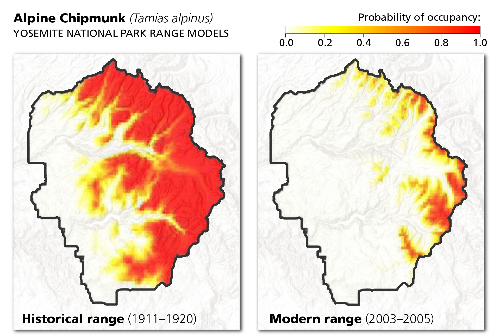

Yosemite National Park is being greatly damaged by Climate Change. Yosemite's largest ice fields, the Lyell and Maclure glaciers, have already lost roughly 90% of their ice volume over the last century due to rising temperatures. Prolonged, severe droughts combined with massive bark beetle infestations have killed millions of trees, fundamentally altering the park's dense conifer forests. Additionally, hotter and drier conditions have fueled increasingly intense wildfires that have repeatedly threatened Yosemite's ancient giant sequoia groves.
Scientists project that the park's remaining glaciers will disappear entirely within the next few decades, permanently altering the mountain hydrology. As the Sierra Nevada snowpack melts earlier each spring, Yosemite will experience intensely dry, water-scarce summers that threaten the survival of its river ecosystems and famous waterfalls. Furthermore, rising temperatures will force high-altitude species, like the American pika, further up the mountainsides until they run out of elevation and face local extinction.

"We are on a highway to climate hell with our foot on the accelerator." -António Guterres